With a massive existing codebase, along with a talent pool with many decades of experience, what steps can we take to improve the quality and safety of code in older languages, C in particular?
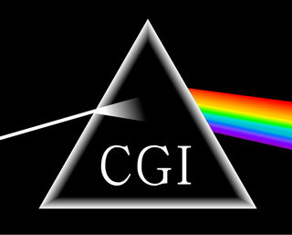
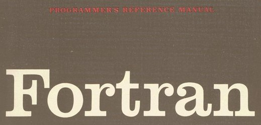
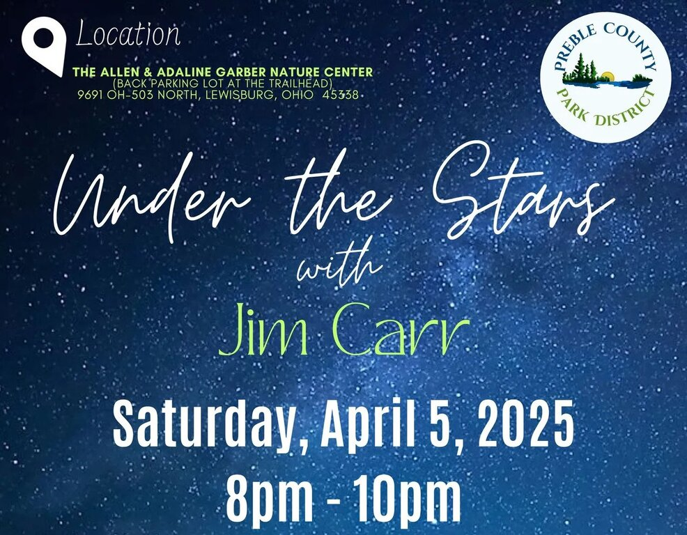
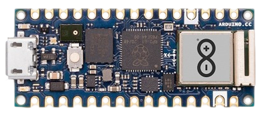
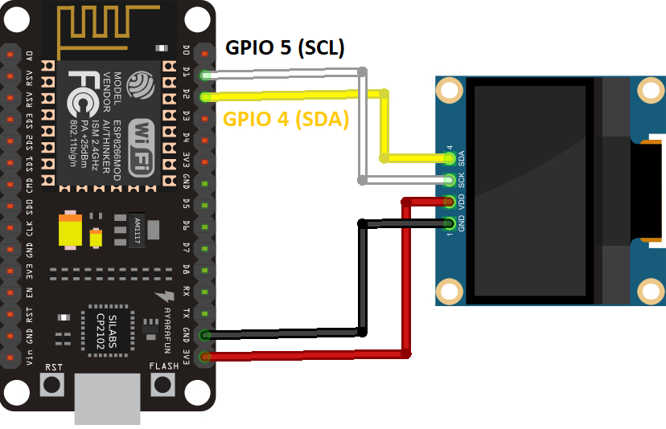
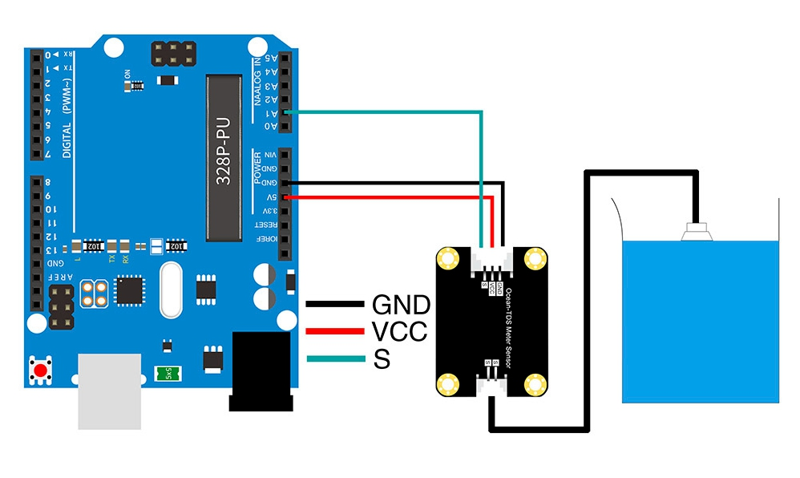
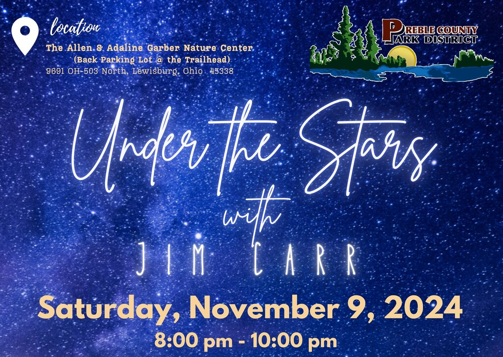
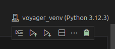
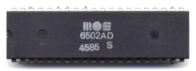
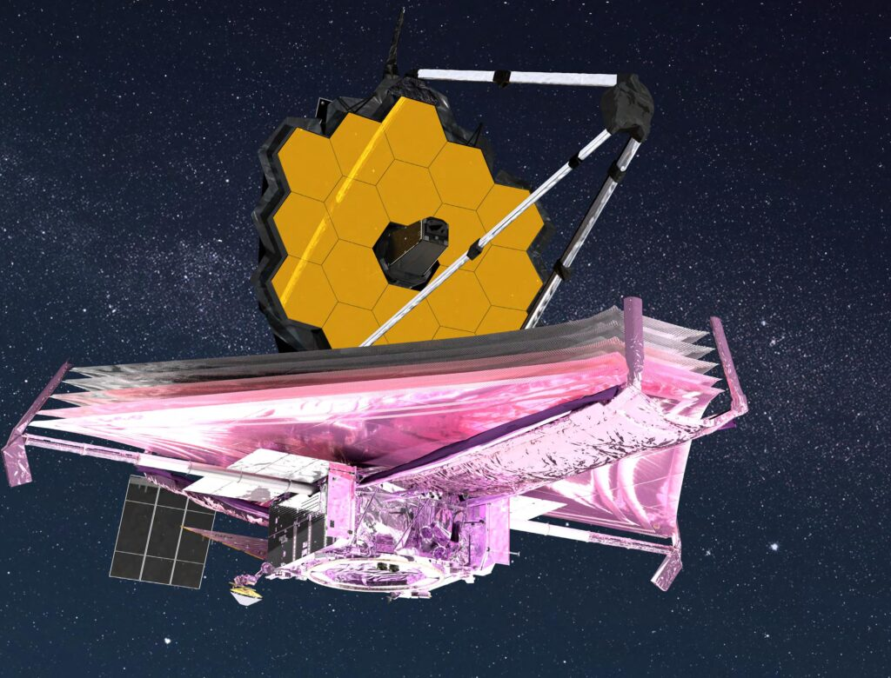
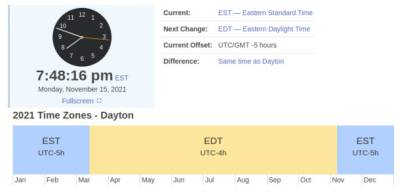
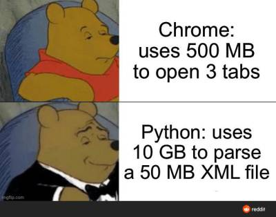
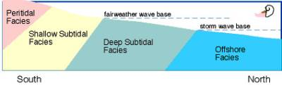
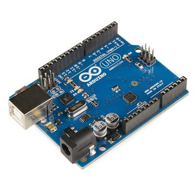
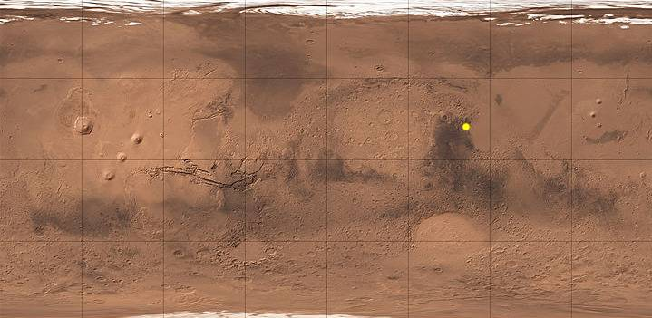
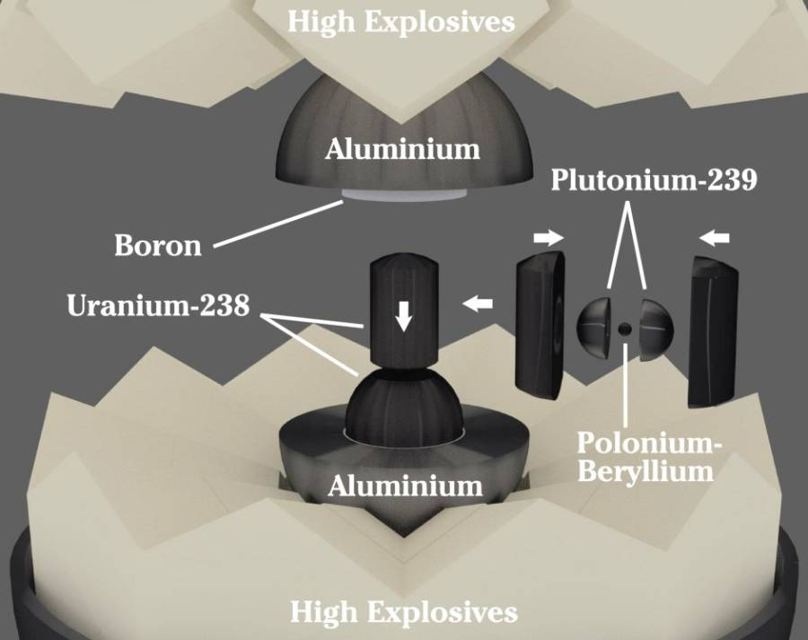
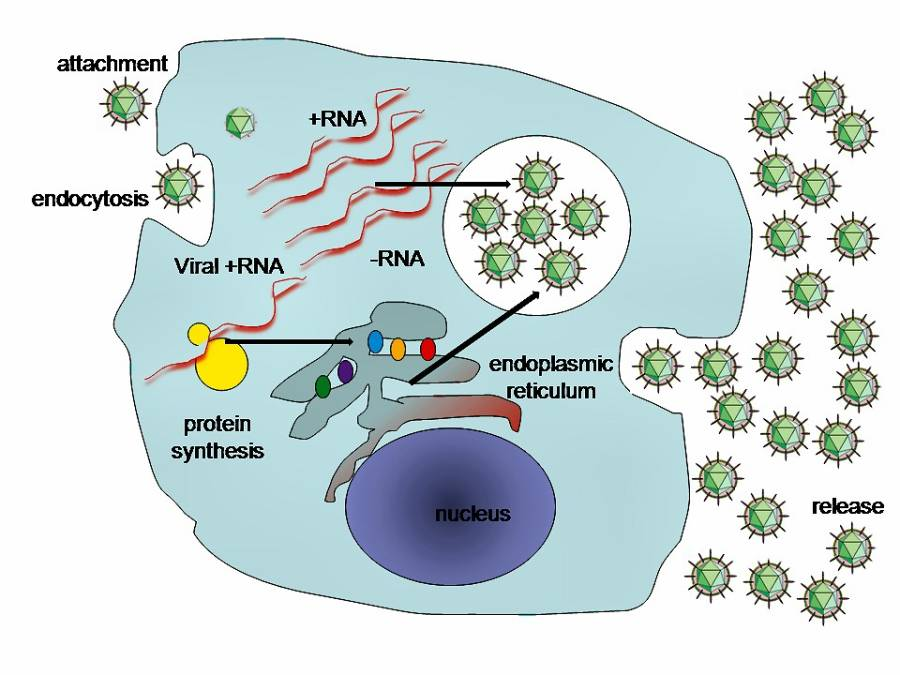
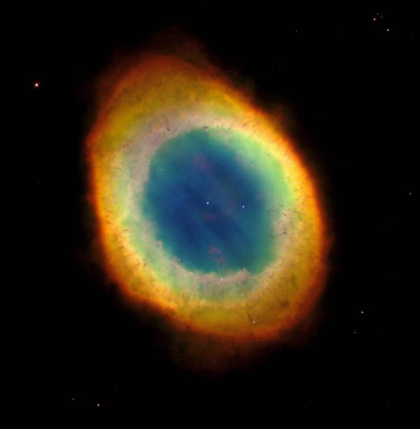
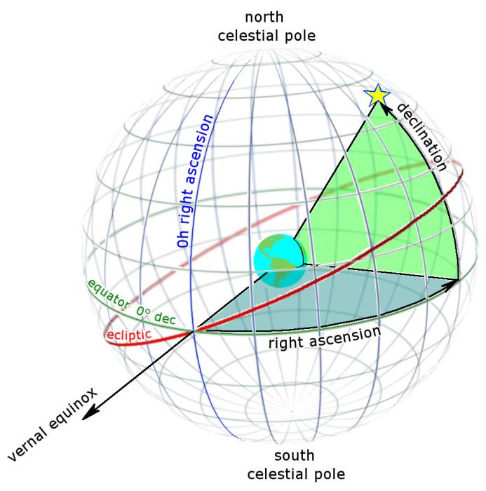
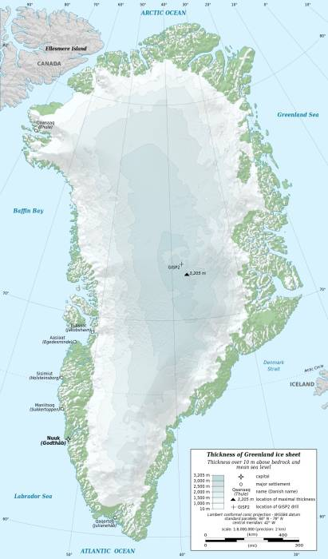
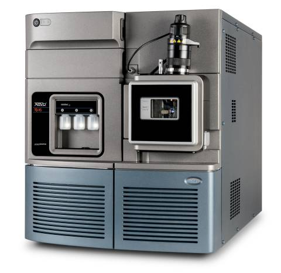
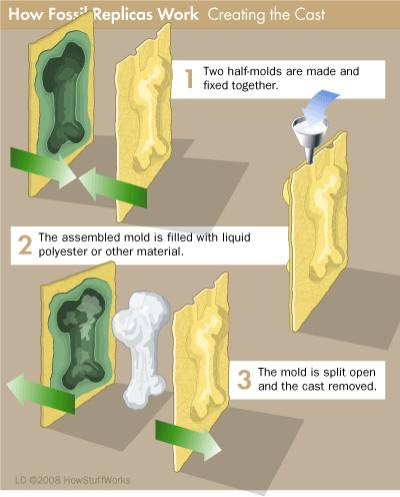
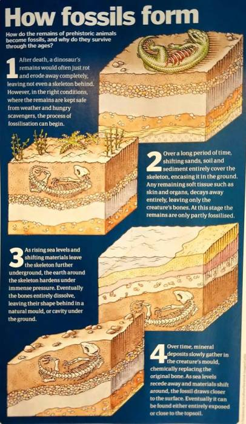
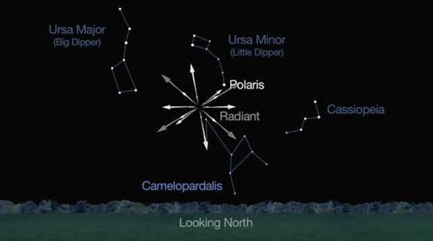
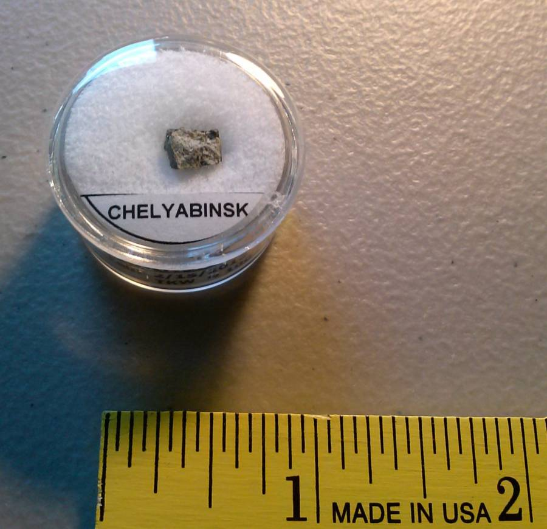
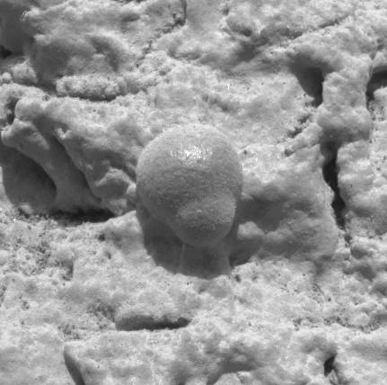
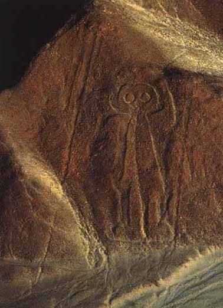
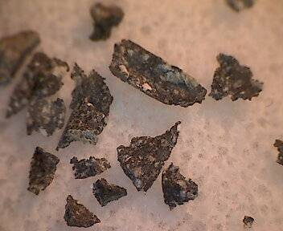
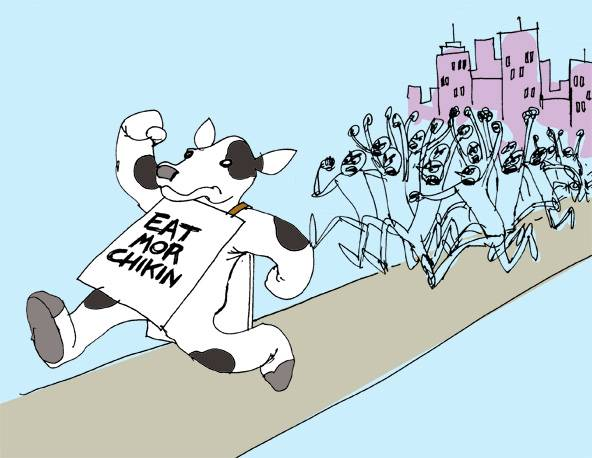
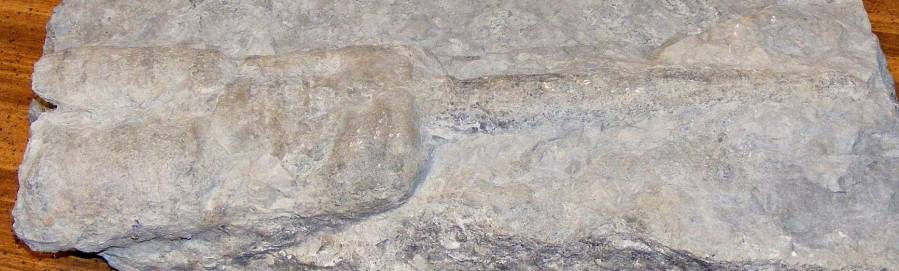
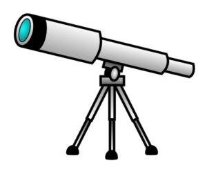